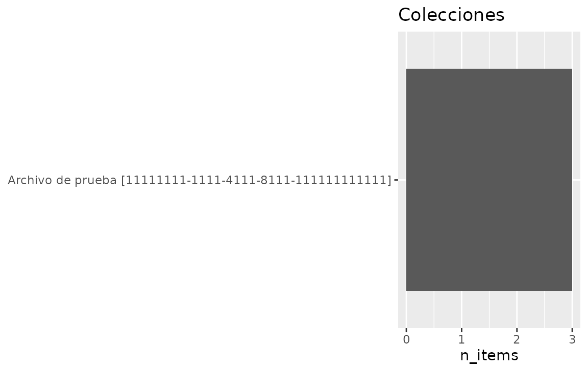
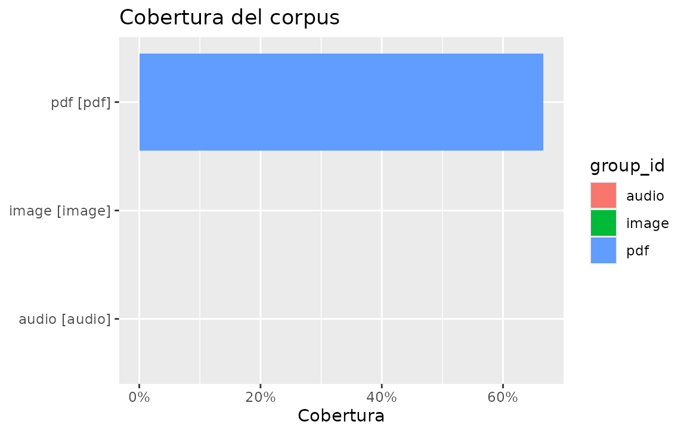
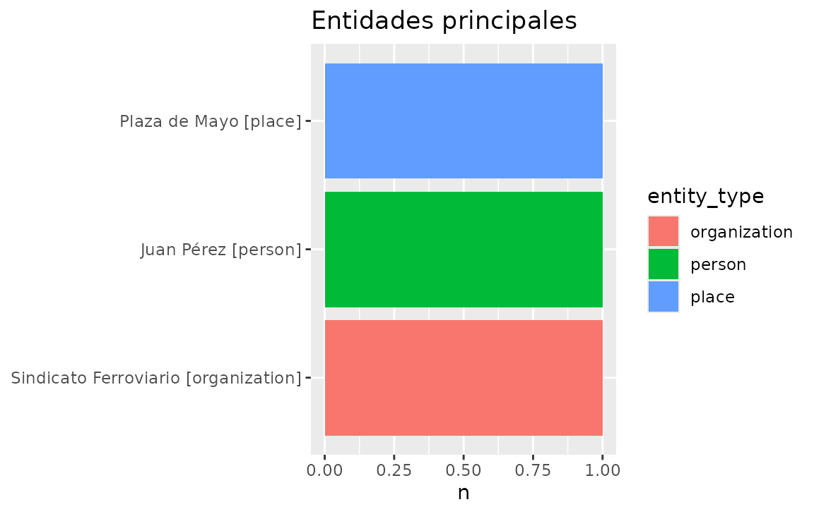
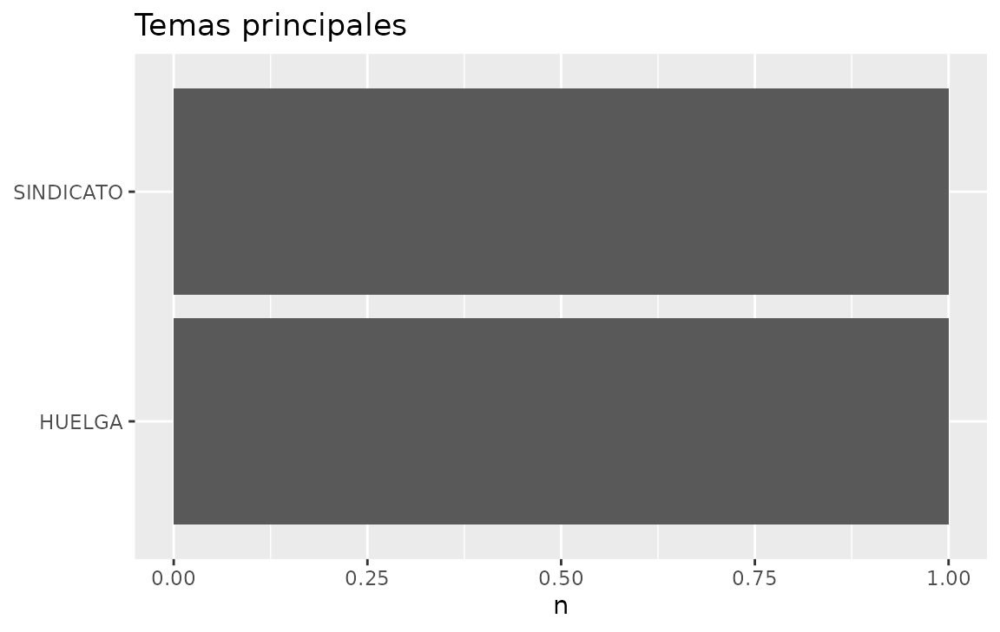
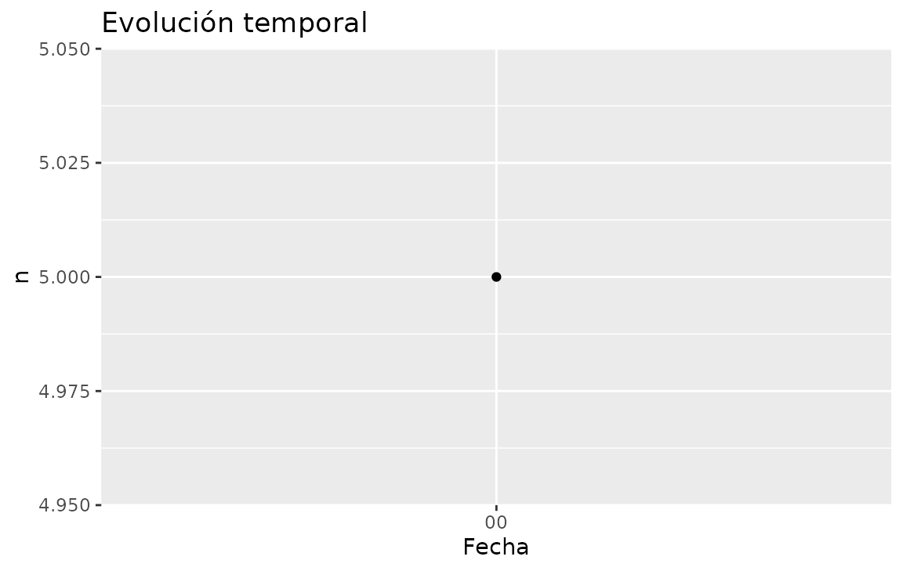
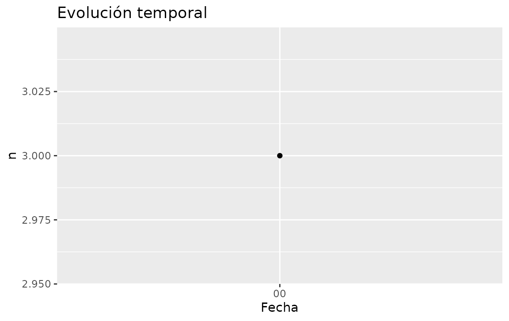
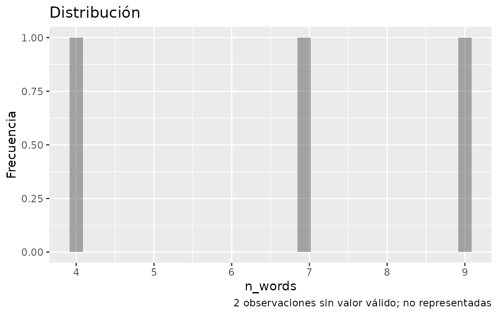
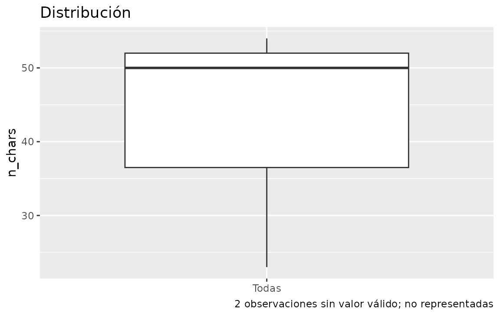
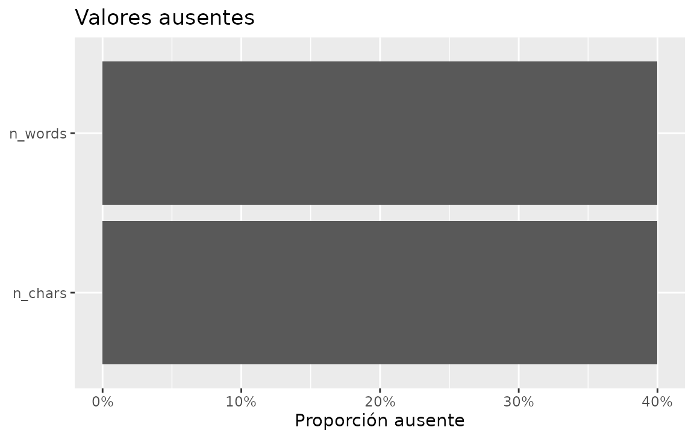

Plotting EntropIA summaries
visualize.RmdPlot helpers consume already-summarised tibbles. They never query SQLite. ggplot2 is in Suggests: install it to plot; the rest of the package works without it.
con <- entropia_connect(system.file(
"extdata", "entropia-example.sqlite",
package = "entropiaR"
))
eda <- entropia_overview(con)Collections and coverage
entropia_plot_collections(eda$collections)
entropia_plot_coverage(eda$quality, metric = "ocr_coverage")
Coverage uses group as the axis label and
group_id when present, so two collections named “Archivo”
stay two bars. status of no_data /
not_applicable is annotated rather than drawn as 0%.
Entities and topics
entropia_plot_entities(eda$entities)
entropia_plot_topics(eda$topics)
top keeps the most frequent rows.
top_by = "group" (entities only) takes the top-N inside
each group instead of globally.
Time series
Overview temporal data uses a column named date:
entropia_plot_temporal(eda$temporal, date_var = "date")
A profile built with
entropia_temporal_profile(..., by = collection_name) must
pass group (or the helper errors when several leftover
columns could be the series):
items <- entropia_collect(entropia_items(con))
by_title <- entropia_temporal_profile(items, created_at, unit = "day")
entropia_plot_temporal(by_title)
Lengths and missingness
lengths <- entropia_document_lengths(entropia_collect(entropia_text(con)))
entropia_plot_distribution(lengths, n_words, type = "histogram")
entropia_plot_distribution(lengths, n_chars, type = "boxplot")
prof <- entropia_profile(lengths, columns = c("n_chars", "n_words"))
entropia_plot_missing(prof$missing)
Empty input draws a “Sin datos…” annotation rather than crashing.
Extend and save
Every helper returns a plain ggplot:
p <- entropia_plot_entities(eda$entities) +
ggplot2::labs(caption = "Ocurrencias, no identidades resueltas")
tmp <- tempfile(fileext = ".png")
ggplot2::ggsave(tmp, p, width = 6, height = 4)
file.exists(tmp)
#> [1] TRUE
entropia_disconnect(con)Next: vignette("dashboard") to put the same tables in a
local app.